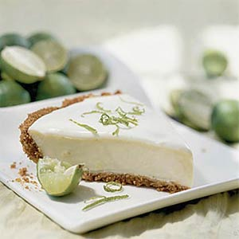
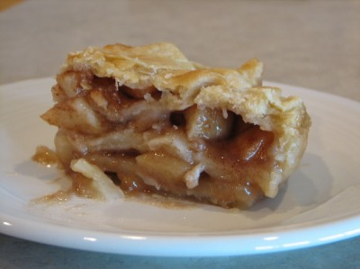
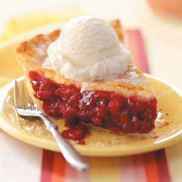

The following are some of my favorite types of pie listed in descending order. Note- This is a very rough estimate, I like many kinds of pie.
- Key Lime
 - Pumpkin

- Caramel Apple Dumpling
 - Raspberry

The following are some of my favorite types of pie listed in descending order. Note- This is a very rough estimate, I like many kinds of pie.